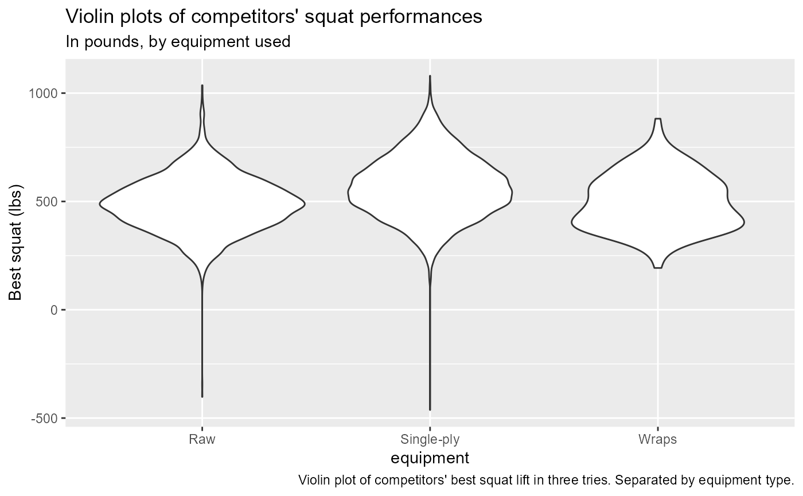
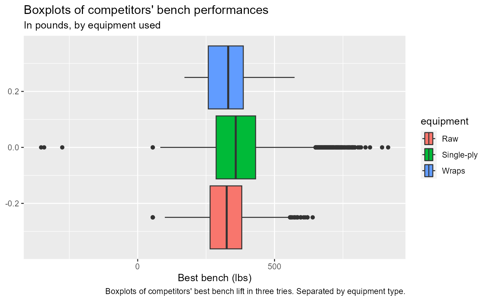
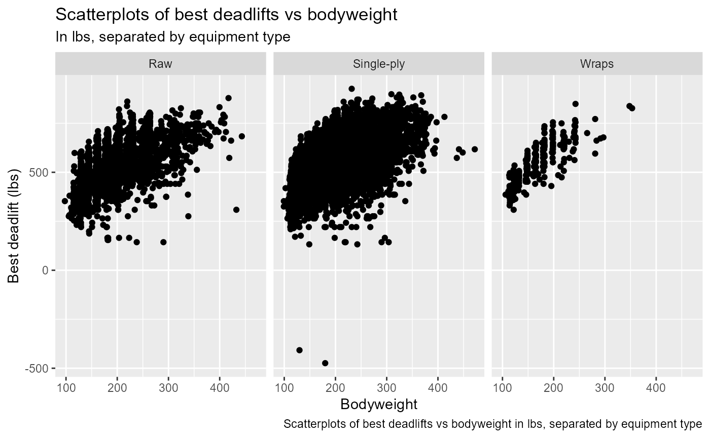
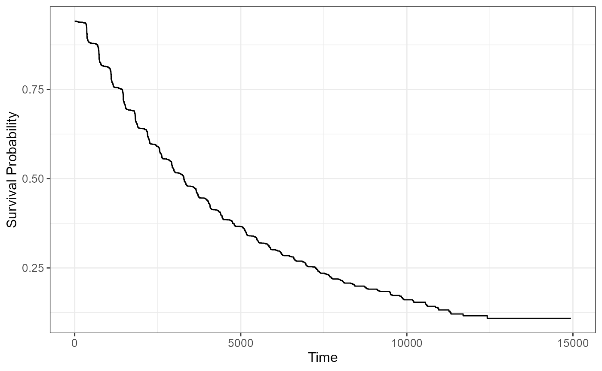

Load the survival package and other necessary packages for analysis
library(survival)
library(ggsurvfit)
#> Warning: package 'ggsurvfit' was built under R version 4.3.2
#> Loading required package: ggplot2
library(tidyverse)
#> ── Attaching core tidyverse packages ──────────────────────── tidyverse 2.0.0 ──
#> ✔ dplyr 1.1.2 ✔ readr 2.1.4
#> ✔ forcats 1.0.0 ✔ stringr 1.5.0
#> ✔ lubridate 1.9.2 ✔ tibble 3.2.1
#> ✔ purrr 1.0.2 ✔ tidyr 1.3.0
#> ── Conflicts ────────────────────────────────────────── tidyverse_conflicts() ──
#> ✖ dplyr::filter() masks stats::filter()
#> ✖ dplyr::lag() masks stats::lag()
#> ℹ Use the conflicted package (<http://conflicted.r-lib.org/>) to force all conflicts to become errors
library(tidytuesdayR)
#> Warning: package 'tidytuesdayR' was built under R version 4.3.2Read the data
create_dir <- function(){
setwd(dirname(getwd()))
data_dir <- "data"
if(!file.exists(data_dir)){
dir.create(data_dir)
}
}
save_data <- function(){
data_path <- file.path("data", "tuesdata.rds")
if(!file.exists(data_path)){
data <- tidytuesdayR::tt_load('2019-10-08')
saveRDS(data, data_path)
}
}
load_data <- function(){
create_dir()
save_data()
data_path <- file.path("data", "tuesdata.rds")
data <- readRDS(data_path)
return(data)
}
ipf_lifts = load_data()[[1]]The dataset I chose to use from TidyTuesday is the powerlifting dataset from 2019. The dataset includes information about powerlifters at specific competitions. It includes the competitor’s name, sex, age, age class, event, equipment used, date of competition, bodyweight in kg, and the best of three lifts in each of the events (squat, bench press, and deadlift) in kg.
The question I aim to answer is whether age and bodyweight class impact the amount of time since a competitor’s first recorded competition it takes a male competitor to reach the “overall international elite” status, as defined by the United States Powerlifting Association.
The data came from the TidyTuesday podcast. The original data as well as the data dictionary can be found at https://github.com/rfordatascience/tidytuesday/tree/master/data/2019/2019-10-08
Analysis
#Converting kgs to lbs, only selecting necessary variables, only including men who competed in all three events
ipf_lifts_lbs = ipf_lifts %>%
mutate(bodyweight_lb = 2.205*bodyweight_kg,
squat_lb = 2.205*best3squat_kg,
bench_lb = 2.205*best3bench_kg,
deadlift_lb = 2.205*best3deadlift_kg) %>%
select(name, sex, event, equipment, age, age_class, date, bodyweight_lb, squat_lb, bench_lb, deadlift_lb) %>%
filter(sex == "M", event == "SBD")
#Creating a binary variable that equals 1 if the lifter was categorized as "elite" during this event, and 0 otherwise.
#The criteria for "international elite" classification for men was found at https://www.lift.net/2013/05/09/classification-standards-for-raw-elite-uspa/
ipf_lifts_event = ipf_lifts_lbs %>%
mutate(elite = ifelse(sex == "M" & bodyweight_lb <114 & squat_lb+bench_lb+deadlift_lb >=1044, 1,
ifelse(sex == "M" & bodyweight_lb >=114 & bodyweight_lb <123 & squat_lb+bench_lb+deadlift_lb >=1135, 1,
ifelse(sex == "M" & bodyweight_lb >=123 & bodyweight_lb <132 & squat_lb+bench_lb+deadlift_lb >=1222, 1,
ifelse(sex == "M" & bodyweight_lb >=132 & bodyweight_lb <148 & squat_lb+bench_lb+deadlift_lb >=1368, 1,
ifelse(sex == "M" & bodyweight_lb >=148 & bodyweight_lb <165 & squat_lb+bench_lb+deadlift_lb >=1498, 1,
ifelse(sex == "M" & bodyweight_lb >=165 & bodyweight_lb <181 & squat_lb+bench_lb+deadlift_lb >=1611, 1,
ifelse(sex == "M" & bodyweight_lb >=181 & bodyweight_lb <198 & squat_lb+bench_lb+deadlift_lb >=1698, 1,
ifelse(sex == "M" & bodyweight_lb >=198 & bodyweight_lb <220 & squat_lb+bench_lb+deadlift_lb >=1790, 1,
ifelse(sex == "M" & bodyweight_lb >=220 & bodyweight_lb <242 & squat_lb+bench_lb+deadlift_lb >=1854, 1,
ifelse(sex == "M" & bodyweight_lb >=242 & bodyweight_lb <275 & squat_lb+bench_lb+deadlift_lb >=1909, 1,
ifelse(sex == "M" & bodyweight_lb >=275 & bodyweight_lb <308 & squat_lb+bench_lb+deadlift_lb >=1995, 1,
ifelse(sex == "M" & bodyweight_lb >=308 & squat_lb+bench_lb+deadlift_lb >=2055, 1, 0)))))))))))))
table(ipf_lifts_event$elite)
#>
#> 0 1
#> 13126 4389
#Now creating a "time" variable that measures the number of days since the first recorded competition for each player
ipf_lifts_time = ipf_lifts_event %>%
group_by(name) %>%
mutate(time = as.numeric(date)-min(as.numeric(date)))
ipf_lifts_time %>%
group_by(name) %>%
summarize(max(time))
#> # A tibble: 9,425 × 2
#> name `max(time)`
#> <chr> <dbl>
#> 1 A Ernandos-Ortega 0
#> 2 A. Avalio 0
#> 3 A. Candelaria 0
#> 4 A. Croeneboom 0
#> 5 A. De Vega 0
#> 6 A. Doria 1099
#> 7 A. Flimu 0
#> 8 A. George 0
#> 9 A. Grados 0
#> 10 A. Gupta 0
#> # ℹ 9,415 more rows
ggplot(data = ipf_lifts_time, aes(x = equipment, y = squat_lb)) + geom_violin() + labs(y = "Best squat (lbs)", title = "Violin plots of competitors' squat performances", subtitle = "In pounds, by equipment used", caption = "Violin plot of competitors' best squat lift in three tries. Separated by equipment type.")
#> Warning: Removed 873 rows containing non-finite values
#> (`stat_ydensity()`).
ggplot(data = ipf_lifts_time, aes(x = bench_lb, group = equipment, fill = equipment)) + geom_boxplot() + labs(x = "Best bench (lbs)", title = "Boxplots of competitors' bench performances", subtitle = "In pounds, by equipment used", caption = "Boxplots of competitors' best bench lift in three tries. Separated by equipment type.")
#> Warning: Removed 1096 rows containing non-finite values
#> (`stat_boxplot()`).
g = ggplot(data = ipf_lifts_time, aes(x = bodyweight_lb, y = deadlift_lb)) + geom_point()
g + facet_wrap(vars(equipment)) + labs(x = "Bodyweight", y = "Best deadlift (lbs)", title = "Scatterplots of best deadlifts vs bodyweight", subtitle = "In lbs, separated by equipment type", caption = "Scatterplots of best deadlifts vs bodyweight in lbs, separated by equipment type")
#> Warning: Removed 1297 rows containing missing values (`geom_point()`).
#Out of the men that competed in all three events (squat, bench press, and deadlift), the "international elite" classification was reached 7971 times.
ipf_lifts_time$elite = compact(ipf_lifts_time$elite)
some(ipf_lifts_time$elite, is.na)
#> [1] TRUE
every(ipf_lifts_time$elite, is.na)
#> [1] FALSE
#So some of the events are NA, but not all of them.
ggsurvfit(survfit(Surv(time, elite) ~ 1, data = ipf_lifts_time))
#using age class
head(fct_relevel(ipf_lifts_time$age_class, "18-19", after = 2))
#> [1] <NA> 24-34 35-39 20-23 <NA> <NA>
#> 15 Levels: 13-15 16-17 18-19 20-23 24-34 35-39 40-44 45-49 50-54 ... 80-999
summary(coxph(Surv(time, elite) ~ age_class + bodyweight_lb, data = ipf_lifts_time))
#> Warning in coxph.fit(X, Y, istrat, offset, init, control, weights = weights, :
#> Loglik converged before variable 10,11,12,13,14 ; coefficient may be infinite.
#> Call:
#> coxph(formula = Surv(time, elite) ~ age_class + bodyweight_lb,
#> data = ipf_lifts_time)
#>
#> n= 15635, number of events= 4115
#> (3620 observations deleted due to missingness)
#>
#> coef exp(coef) se(coef) z Pr(>|z|)
#> age_class16-17 3.867e-01 1.472e+00 1.018e+00 0.380 0.704169
#> age_class18-19 1.105e+00 3.018e+00 1.003e+00 1.101 0.270744
#> age_class20-23 1.276e+00 3.584e+00 1.001e+00 1.275 0.202183
#> age_class24-34 6.455e-01 1.907e+00 1.001e+00 0.645 0.519005
#> age_class35-39 -1.484e-01 8.621e-01 1.002e+00 -0.148 0.882275
#> age_class40-44 -1.015e+00 3.624e-01 1.003e+00 -1.012 0.311541
#> age_class45-49 -1.768e+00 1.707e-01 1.007e+00 -1.756 0.079044 .
#> age_class50-54 -2.948e+00 5.244e-02 1.017e+00 -2.900 0.003735 **
#> age_class55-59 -3.545e+00 2.886e-02 1.046e+00 -3.389 0.000702 ***
#> age_class60-64 -1.805e+01 1.443e-08 3.883e+02 -0.046 0.962916
#> age_class65-69 -1.835e+01 1.069e-08 4.874e+02 -0.038 0.969962
#> age_class70-74 -1.828e+01 1.157e-08 5.183e+02 -0.035 0.971872
#> age_class75-79 -1.805e+01 1.443e-08 1.050e+03 -0.017 0.986277
#> age_class80-999 -1.793e+01 1.628e-08 2.932e+03 -0.006 0.995120
#> bodyweight_lb -2.556e-04 9.997e-01 2.696e-04 -0.948 0.343019
#> ---
#> Signif. codes: 0 '***' 0.001 '**' 0.01 '*' 0.05 '.' 0.1 ' ' 1
#>
#> exp(coef) exp(-coef) lower .95 upper .95
#> age_class16-17 1.472e+00 6.793e-01 0.200023 10.8339
#> age_class18-19 3.018e+00 3.314e-01 0.422704 21.5445
#> age_class20-23 3.584e+00 2.791e-01 0.504021 25.4783
#> age_class24-34 1.907e+00 5.244e-01 0.268099 13.5644
#> age_class35-39 8.621e-01 1.160e+00 0.120937 6.1453
#> age_class40-44 3.624e-01 2.759e+00 0.050748 2.5878
#> age_class45-49 1.707e-01 5.859e+00 0.023731 1.2276
#> age_class50-54 5.244e-02 1.907e+01 0.007150 0.3847
#> age_class55-59 2.886e-02 3.465e+01 0.003713 0.2243
#> age_class60-64 1.443e-08 6.929e+07 0.000000 Inf
#> age_class65-69 1.069e-08 9.353e+07 0.000000 Inf
#> age_class70-74 1.157e-08 8.646e+07 0.000000 Inf
#> age_class75-79 1.443e-08 6.931e+07 0.000000 Inf
#> age_class80-999 1.628e-08 6.142e+07 0.000000 Inf
#> bodyweight_lb 9.997e-01 1.000e+00 0.999216 1.0003
#>
#> Concordance= 0.735 (se = 0.004 )
#> Likelihood ratio test= 4747 on 15 df, p=<2e-16
#> Wald test = 1987 on 15 df, p=<2e-16
#> Score (logrank) test = 3920 on 15 df, p=<2e-16
#Using continuous age
summary(coxph(Surv(time, elite) ~ age + bodyweight_lb, data = ipf_lifts_time))
#> Call:
#> coxph(formula = Surv(time, elite) ~ age + bodyweight_lb, data = ipf_lifts_time)
#>
#> n= 15617, number of events= 4112
#> (3638 observations deleted due to missingness)
#>
#> coef exp(coef) se(coef) z Pr(>|z|)
#> age -0.1151230 0.8912565 0.0021494 -53.560 <2e-16 ***
#> bodyweight_lb 0.0002720 1.0002720 0.0002679 1.015 0.31
#> ---
#> Signif. codes: 0 '***' 0.001 '**' 0.01 '*' 0.05 '.' 0.1 ' ' 1
#>
#> exp(coef) exp(-coef) lower .95 upper .95
#> age 0.8913 1.1220 0.8875 0.895
#> bodyweight_lb 1.0003 0.9997 0.9997 1.001
#>
#> Concordance= 0.733 (se = 0.004 )
#> Likelihood ratio test= 4651 on 2 df, p=<2e-16
#> Wald test = 2873 on 2 df, p=<2e-16
#> Score (logrank) test = 3399 on 2 df, p=<2e-16Overall, the Kaplan-Meier plot shows that as time since first competition increases, the probability of getting to “international elite” status decreases. Specifically, about 3000 days after the first competition, the probability of reaching “international elite” status drops to 0.5.
To see whether age and bodyweight affect the time until international elite status is reached, I ran a Cox proportional hazards model using time to international elite status as the outcome and age and bodyweight as predictors. I found that age significantly increases the time until international elite status is reached, adjusting for bodyweight.
Functions used dplyr::select dplyr::mutate dplyr::filter dplyr::group_by dplyr::summarize forcats::fct_relevel
purrr::compact purrr::some purrr::every
ggplot2::geom_violin ggplot2::geom_boxplot ggplot2::geom_point ggplot2::facet_wrap
survival::survfit survival::coxph